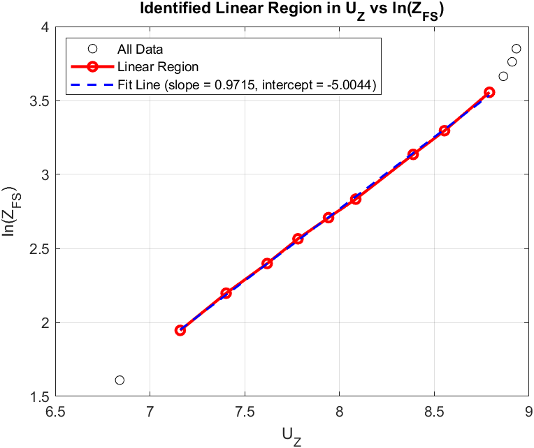
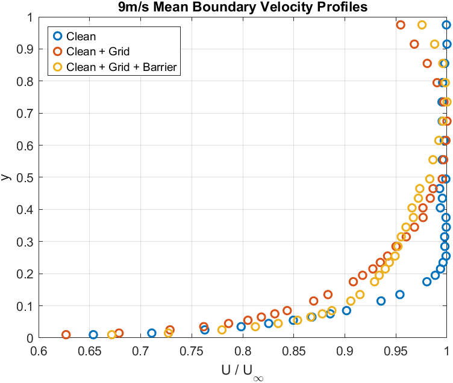
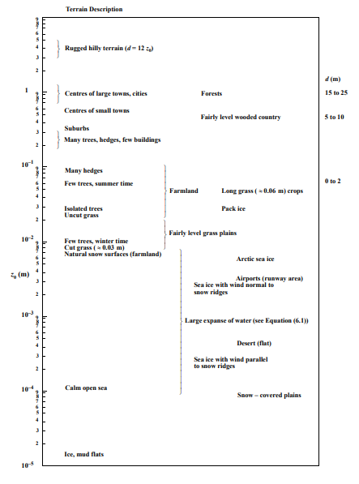

Problem
This was a group coursework covering five wind tunnel labs: dynamic pressure and wind tunnel calibration, pressure distribution around a 2D aerofoil, low-speed flow over a delta wing, atmospheric boundary layer (ABL) flows, and velocity profiles in a cylindrical pipe. Instrumentation setup and data acquisition for all five were done jointly as a team of four; each member individually led the analysis and write-up for one lab. My individual contribution was Task 4: Assessment of Atmospheric Boundary Layer Flows — estimating friction velocity and surface roughness for simulated boundary layers, and mapping them to real-world terrain types.
Approach
Tests ran in Cranfield's 8' × 4' Atmospheric Boundary Layer Wind Tunnel, an open-return tunnel with a 2.4 m × 1.2 m closed test section and a 15 m upstream fetch for calibrated turbulence generation. Three fetch configurations were tested: a clean floor, a clean floor with a coarse turbulence-generating grid, and the grid plus a 150 mm wall barrier just downstream to add a near-ground velocity deficit. For each configuration, a pitot rake measured time-averaged differential pressure across the boundary layer at three tunnel speeds (3, 9, and 13 m/s) — nine velocity profiles in total. Flow velocity at each height was recovered from the measured dynamic pressure, with air density corrected from ambient pressure and temperature.
As a sanity check, the shape factor H was computed for every profile before further analysis — it averaged around 1.15, consistent with a sufficiently turbulent boundary layer. To extract friction velocity (U*) and surface roughness length (Z₀), each profile was scaled 1:200 to full-scale height, near-wall points and points outside the boundary layer were excluded as outliers, and a linear regression was fit to ln(Z) vs. U_Z using the log-law relation:
U_Z / U* = (1/κ) · ln(Z / Z₀)
giving U* = κ/m and Z₀ = exp(c), where m and c are the slope and intercept of the fitted line. The resulting friction velocity and roughness length for each of the nine configurations were then compared against ESDU 82026 reference terrain data to identify the closest-matching real-world terrain type.


Result
The log-law fits produced friction velocity and roughness length for all nine configuration/speed combinations, each mapped to an ESDU terrain classification:
| Configuration | Velocity (m/s) | U* (m/s) | Z₀ (m) | Terrain Type |
|---|---|---|---|---|
| Clean | 3.01 | 0.18 | 4.93E-03 | Open country with isolated trees/hedges, pack ice, uncut grass |
| Clean | 8.93 | 0.41 | 7.88E-04 | Arctic sea ice |
| Clean | 13.0 | 0.58 | 5.04E-04 | Arctic sea ice |
| Clean + Grid | 2.96 | 0.14 | 1.11E-03 | Arctic sea ice |
| Clean + Grid | 9.10 | 0.33 | 1.17E-03 | Sea ice, wind normal to snow ridges |
| Clean + Grid | 12.9 | 0.51 | 3.60E-04 | Sea ice, wind normal to snow ridges |
| Clean + Grid + Barrier | 3.14 | 0.084 | 1.38E-03 | Flat desert |
| Clean + Grid + Barrier | 8.7 | 0.19 | 1.49E-04 | Flat ice, mud flats |
| Clean + Grid + Barrier | 13.5 | 0.30 | 1.77E-04 | Flat ice, mud flats |

The clearest trend: surface roughness parameter Z₀ consistently fell as tunnel speed increased, for every fetch configuration. Physically, inertial forces increasingly dominate over viscous forces at higher flow speed, which reduces the relative influence of surface roughness on the flow — so the same physical fetch setup reads as "smoother" terrain at higher speed. Since roughness-block runs weren't part of this configuration set, the direct effect of discrete roughness elements couldn't be assessed from this data.
Limitations
Bernoulli's equation was used to convert dynamic pressure to local velocity, which strictly doesn't hold inside a boundary layer where viscous forces are significant — an accepted simplification given the instrumentation available. Instrument uncertainty was ±0.3 hPa on the digital barometer and ±0.2°C on the digital thermometer. The measurement setup was also assumed to have no influence on the surrounding flow field, and acquisition time was assumed long enough to statistically average out turbulent fluctuations.